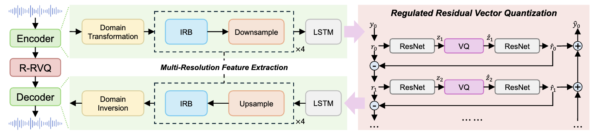

Neural speech coding has recently achieved remarkable progress at low and ultra-low bitrates, yet its efficiency remains constrained by the limited ability to learn compact representations. To address this challenge, we introduce Lisa, a lightweight neural speech codec that enhances both feature representation and quantization. First, Lisa employs a causal frequency-domain encoder–decoder equipped with Inception Residual Blocks (IRB) to better exploit multi-scale correlations. Second, we propose Regulated Residual Vector Quantization (R-RVQ), which explicitly modulates residuals into quantization-friendly forms, enabling more effective and compact multi-stage representation. Experimental results demonstrate that Lisa surpasses existing neural speech codecs in coding efficiency, while retaining low complexity suitable for real-time speech communication and streaming.
Experimental Results: LibriTTS Test-Clean Reconstruction @ 16kHz Audio